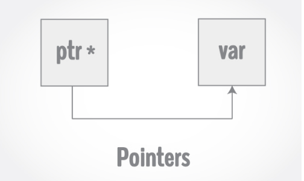
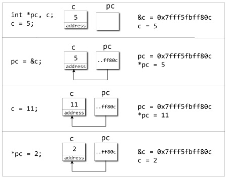

POINTERS In C++ Programming
In this article, you'll learn everything about pointers. You'll learn how values are stored in the computer and how to access them using pointers.
Pointers are powerful features of C++ that differentiates it from other programming languages like Java and Python.
Pointers are used in C++ program to access the memory and manipulate the address.
Address in C++
To understand pointers, you should first know how data is stored on the computer.
Each variable you create in your program is assigned a location in the computer's memory. The value the variable stores is actually stored in the location assigned.
To know where the data is stored, C++ has an & operator. The & (reference) operator gives you the address occupied by a variable.
If var is a variable then, &var gives the address of that variable.
Example 1: Address in C++
#include <iostream>
using namespace std;
int main()
{
int var1 = 3;
int var2 = 24;
int var3 = 17;
cout << &var1 << endl;
cout << &var2 << endl;
cout << &var3 <<endl;
} |
Output
0x7fff5fbff8ac 0x7fff5fbff8a8 0x7fff5fbff8a4 |
Note:
You may not get the same result on your system.
The 0x in the beginning represents the address is in hexadecimal form.
Notice that first address differs from second by 4-bytes and second address differs from third by 4-bytes.
This is because the size of integer (variable of type int) is 4 bytes in 64-bit system.
Pointers Variables
C++ gives you the power to manipulate the data in the computer's memory directly. You can assign and de-assign any space in the memory as you wish. This is done using Pointer variables.
Pointers variables are variables that points to a specific address in the memory pointed by another variable.
How to declare a pointer?
int *p;
OR,
int* << p; |
The statement above defines a pointer variable p. It holds the memory address
The asterisk is a dereference operator which means pointer to.
Here, pointer p is a pointer to int, i.e., it is pointing to an integer value in the memory address.
Reference operator (&) and Deference operator (*)
Reference operator (&) as discussed above gives the address of a variable.
To get the value stored in the memory address, we use the dereference operator (*).
For example:
If a number variable is stored in the memory address 0x123, and it contains a value 5.
The reference (&) operator gives the value 0x123, while the dereference (*) operator gives the value 5.
Note:
The (*) sign used in the declaration of C++ pointer is not the dereference pointer. It is just a similar notation that creates a pointer.
C++ Program to demonstrate the working of pointer.
#include <iostream>
using namespace std;
int main() {
int *pc, c;
c = 5;
cout << "Address of c (&c): " << &c <<endl;
cout << "Value of c (c): " << c << endl <<endl;
pc = &c; // Pointer pc holds the memory address of variable c
cout <<"Address that pointer pc holds (pc): "<< pc << endl;
cout <<"Content of the address pointer pc holds (*pc): " << *pc << endl << endl;
c = 11; // The content inside memory address &c is changed from 5 to 11.
cout << "Address pointer pc holds (pc): " <<pc <<endl;
cout << "Content of the address pointer pc holds (*pc): " <<*pc << endl << endl;
*pc = 2;
cout <<"Address of c (&c): " << &c <<endl;
cout <<"Value of c (c): " <<c <<endl <<endl;
return 0;
} |
Output
Address of c (&c): 0x7fff5fbff80c Value of c (c): 5 Address that pointer pc holds (pc): 0x7fff5fbff80c Content of the address pointer pc holds (*pc): 5 Address pointer pc holds (pc): 0x7fff5fbff80c Content of the address pointer pc holds (*pc): 11 Address of c (&c): 0x7fff5fbff80c Value of c (c): 2 |

Explanation of program
When c = 5; the value 5 is stored in the address of variable c - 0x7fff5fbff8c.
When pc = &c; the pointer pc holds the address of c - 0x7fff5fbff8c, and the expression (dereference operator) *pc outputs the value stored in that address, 5.
When c = 11; since the address pointer pc holds is the same as c - 0x7fff5fbff8c, change in the value of c is also reflected when the expression *pc is executed, which now outputs 11.
When *pc = 2; it changes the content of the address stored by pc - 0x7fff5fbff8c. This is changed from 11 to 2. So, when we print the value of c, the value is 2 as well.
Common mistakes when working with pointers
Suppose, you want pointer pc to point to the address of c. Then,
int c, *pc; pc=c; /* Wrong! pc is address whereas, c is not an address. */ *pc=&c; /* Wrong! *pc is the value pointed by address whereas, %amp;c is an address. */ pc=&c; /* Correct! pc is an address and, %amp;pc is also an address. */ *pc=c; /* Correct! *pc is the value pointed by address and, c is also value*/ |